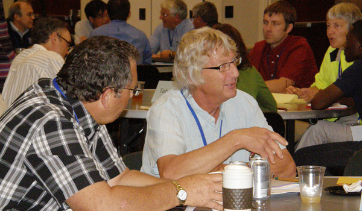
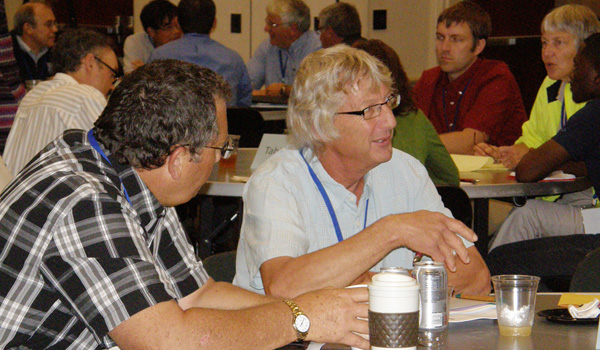

Advisory Board
 

Advisory Board member Paul Helgeson (center), GNP Company, listens to Clay Dygert, research staff, The Ohio State University, explaining how his unique nitrogen sensing equipment operates. © 2012
Advisory Board member Dr. Joe Colletti joins a discussion with graduate students at this project's 2012 annual conference in Wooster, Ohio. © 2012
Advisory Board member John Kadyszewski (far right), Winrock International, learns about this project's preliminary findings at a poster session of this project's 2012 annual conference. © 2012
Advisory Board member, Mark Hamsher (left), Hiland High School, Ohio, visits with Caleb Halfhill and Lindsay Doerr, The Ohio State University, about their poster at this project's 2012 annual conference. © 2012
Advisory Board member Regan Waskom (far left), Colorado Water Institute, participates in a small group discussion at this project's 2012 annual conference. © 2012
Advisory Board member and Iowa farmer Dick Sloan (center) participates in a small group discussion at this project's 2012 annual conference. © 2012
Because of the large amount of coordination and stakeholder involvement required for the project, as well as the high level of technical expertise required for the monitoring, database and modeling aspects, the project is advised by an External Advisory Board. This board consists of members with broad managerial, producer and scientific expertise on GHGs, climate modeling, physical modeling, analytical chemistry and carbon sequestration.
The board's role is to provide high-level, broad advice and to serve as a network into important stakeholder groups. The External Advisory Board meets regularly with the Executive Team. The External Advisory Board also meets with the full team at the project's annual conference.
| Howard M. Brown | GROWMARK | Manager of agronomy services | Bloomington, IL |
| Joe Colletti | Iowa State Univ., College of Ag. & Life Sciences | Sr. assoc. dean of CALS & assoc. director of expt. stations | Ames, IA |
| Pradip K. Das | Monsanto | Technology Lead, IFS | St. Louis, MO |
| James B. Gulliford (Jim) | Soil & Water Conservation | CEO; former EPA director of Region VI & national EPA program director | Ankeny, IA |
| Neal Hageman | United Soybean Board/SmithBucklin | Director of Soybean Stress Management | Chesterfield, MO |
| Arnel Hallauer | National Academy of Sciences | Member | Ames, IA |
| Mark Hamsher | Ohio Educational System | High school science teacher | Medina, OH |
| Jane Hardisty | National Resource Conservation Services | State Conservationist | Indianapolis, IN |
| Jerry L. Hatfield | ARS National Lab. for Agric. & Environ. | Director | Ames, IA |
| Paul Helgeson | GNP Company | Sustainability manager | St. Cloud, MN |
| Jeff Jacobsen | North Central Regional Assoc. of Ag Exp. Station Directors | Executive director | Madison, WI |
| Richard Joost | United Soybean Board/SmithBucklin | Production Research Program Director | St. Louis, MO |
| John Kadyszewski | Winrock International, Ecosystem Services | Director of Winrock's American Carbon Registry | Arlington, VA |
| Leonard Krishtalka (Kris) | University of Kansas, Biodiversity Institute | Director | Lawrence, KS |
| Gary Mast | Nat. Assoc. of Conservation Districts | Producer | Millersburg, OH |
| Robin Shepard | North Central Cooperative Extension Association | Executive director | Madison, WI |
| Richard Sloan (Dick) | NE Iowa Farmer | Producer | Rowley, IA |
| Reagan M. Waskom | Colorado Water Institute | Director | Fort Collins, CO |
| Norman Widman | NRCS, Ecological Sciences Division | National agronomist | Washington DC |